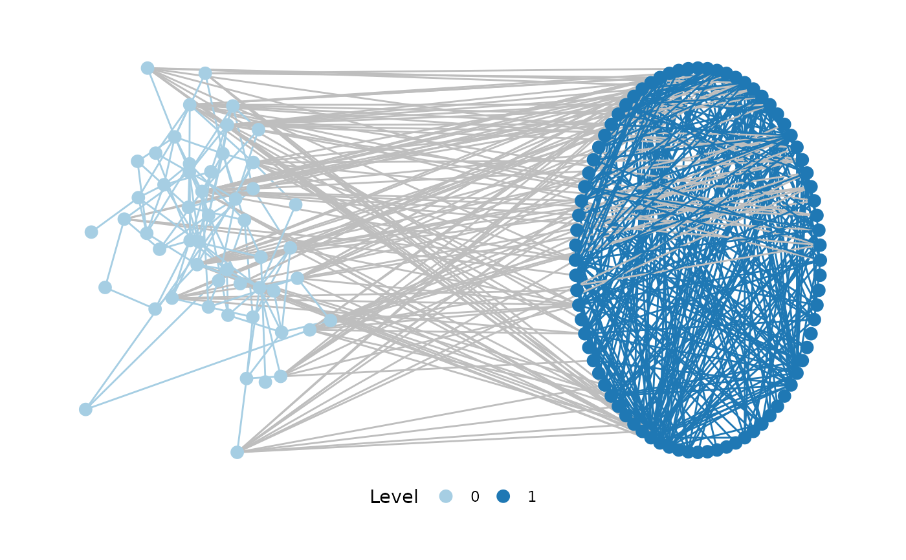

Visualize a multi-level network, with the possibility of specifying separate layouts for each level. This is a somewhat hacky wrapper for arranging separate ggraph calls for each network level in a circle.
plot_mnet( net, lvl_attr = c("sesType"), layouts = rep("kk", n_levels), label = FALSE, directed = NULL, nodesize = 3, edgewidth = 0.5 )
| net | A tidygraph, igraph or statnet network object |
|---|---|
| lvl_attr | The name of the categorical node attribute specifying at which level a node is situated |
| layouts | A list of layouts (see |
| label | logical - should nodes be labelled? (defaults to false) |
| directed | whether the network object shall be interpreted as directed
network. Per default, |
| nodesize | The size of node displays, if displayed as points (if label = false) |
| edgewidth | The width of lines illustrating edges |
A ggraph object
For more extensive visualization options, it is recommended to explore the layout_as_multilevel function included in the package graphlayouts.
